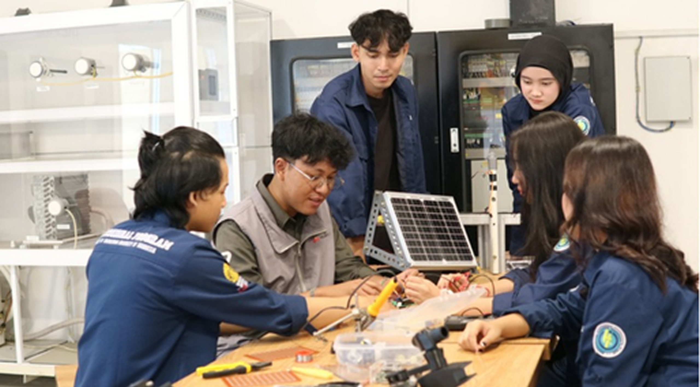

01
01Identitas
Nama Lengkap
Rasendriya Muhammad Adisanto

Portofolio — Kelas 1CC5 — Jakarta Selatan
Halo, saya
Mahasiswa yang tenang, eksploratif, dan berakar —
terinspirasi oleh alam, tumbuh lewat proses.
Ganti dengan link YouTube / video perkenalan kamu di sini.
01 — Tentang Saya
Saya Rasendriya Muhammad Adisanto, mahasiswa kelas 1CC5 yang tinggal di Perumahan Casamora, Jagakarsa. Lulusan MAN 13 Jakarta Selatan.
Seperti White Desert yang membawa tamunya ke tempat paling sunyi di bumi untuk menemukan kembali diri sendiri — saya percaya proses belajar terbaik lahir dari ketenangan, ketekunan, dan keberanian mencoba hal baru.


02 — Data Diri
Geser ke samping — seperti memilih ekspedisi di White Desert. Setiap kartu adalah bagian dari cerita saya.
01Identitas
Rasendriya Muhammad Adisanto
 02
02Akademik
Fokus pada dasar komputasi, kolaborasi, dan disiplin belajar.
 03
03Domisili
Perumahan Casamora, Jagakarsa, Jakarta Selatan.
 04
04Pendidikan Terakhir
Madrasah Aliyah Negeri 13 Jakarta Selatan — fondasi akademik & karakter.
“
Ketenangan bukan berarti diam. Ia adalah cara saya mendengar dunia lebih jernih, lalu bergerak dengan yakin.— Rasendriya Muhammad Adisanto
03 — Pendidikan & Keahlian
Seperti kamp Whichaway & Echo — kecil, hangat, dan dirancang untuk bertahan. Ini fondasi tempat saya bertumbuh.
Pendidikan menengah — disiplin, nilai agama, dan akademik yang seimbang.
[ Pendidikan Terakhir ]
Sekarang — mendalami komputasi, logika, dan kerja tim lewat proyek nyata.
[ Basecamp Aktif ]
Senjata utama — membangun website native yang cepat dan elegan dari nol.
[ Skill Set ]04 — Karya Pilihan

HTML • CSS • JS — layout fullscreen ala White Desert.

Dokumentasi & presentasi — rapi dan terstruktur.

Eksplorasi tipografi serif + palet earthy.

Website ini — 100% HTML, CSS, JS tanpa framework.

Potret tenang sekitar Casamora.

Rangkuman materi komputasi dasar.
05 — Perjalanan
Lulus dari MAN 13 Jakarta Selatan dengan fondasi akademik, disiplin, dan karakter yang kuat sebagai bekal awal karier.
Melanjutkan ke CCIT-FTUI (Fakultas Teknik Universitas Indonesia) untuk mendalami ilmu komputer dan teknologi informasi secara praktis.
Saat ini berada di kelas 1CC5 — fokus pada komputasi dasar, kolaborasi tim, dan membangun portofolio web native dengan HTML, CSS, dan JS.
06 — Kontak
Tertarik kolaborasi, tugas kelompok, atau sekadar menyapa? Kirim pesan — saya akan membalas secepat mungkin.